UI rework
At a glance
Goal: make the run screen say what just happened and what comes next, fix the defects from the Windows install test, and use the Windows folder dialog to add a repo.
Shipped:
- After a merge, the Next step card closes the merge panel and lists what happened, then Continue. Continue shows
Sending…, then a sent line. No toast. - A
--no-reviewtask PR gets Merge once its engineer has ended (queue item 149). - The runs list sorts newest activity first. A run with Auto-continue on shows an
autotag. - Remove repo and the new Forget this run use one centred confirm modal. Forget removes a leftover run from the board.
- Add repo opens the Windows "Select Folder" dialog in the desktop app, and a path field in the browser build. The board's own folder browser is gone.
Wall time is estimated from commit times, idle gaps included. Context is final size, not tokens billed; reviewer and #110 fix engineer left out.
PRs: wave 1 #106, wave 2 #107, final #108 (round 1 fix, round 2 pass), review fixes #110. Lines are against pod-staging.
Look here first
packages/server/src/forget-run-routes.tsandpackages/model/src/forget.ts: Forget deletes a file the app can't bring back. It also shows on a run whose PR still waits on you (an agent default, see Key decisions).packages/desktop/src/folder-bridge.ts,preload-main.ts,window-main.ts: the window's first bridge to the main process. The sender check, the sandbox, and the single exposed call are the defence.packages/web/src/screens/runs/stop-log.ts: the rules for what the "what happened" list adds, when it resets, and when the send button hides. The reviewer saw it at 400 px only.packages/server/src/gh.tsandpackages/model/src/fix-runs.ts: Merge for a no-review PR depends on the exact PR-body textskipped (--no-review). If pod changes that wording, Merge goes away with no error.- The installed-app check (Add repo, Merge then Continue, Forget): no script covers it, and nobody has run it. It is yours to do by hand.
Key features
A merge now leads straight to Continue on one card, and a leftover run can be removed from the app.
| Feature | What changed | Shown by |
|---|---|---|
| Merge, then Continue | The merge panel closes; a list shows Merged PR #36 then Continue; the send reads Sending…, then Sent continue and pod runs | screenshots 1 and 2 below |
| Merge for a no-review PR | Merge shows once the engineer ended and no reviewer started | Card read Merge PR #36, Round 1 skipped · --no-review (stub gh) |
Newest first, auto tag | Runs sort by last activity, not state; Auto-continue runs carry a tag | sidebar in screenshot 1 |
| Forget this run | New item in the run's menu; deletes only the run's claim file | screenshot 3 |
| Remove repo | Same modal, with the folder path; no runs line | screenshot 4 |
| Add repo | Windows dialog in the desktop app; path field in the browser build | screenshot 5 (browser build) |
| Folder browser | Deleted, with GET /api/fs/folders | The route answers 404 JSON |
The screenshots come from a temp config, a fixture repo, a stub gh, and a fake claude. The Windows dialog can't show on this Linux host.
1. After the merge
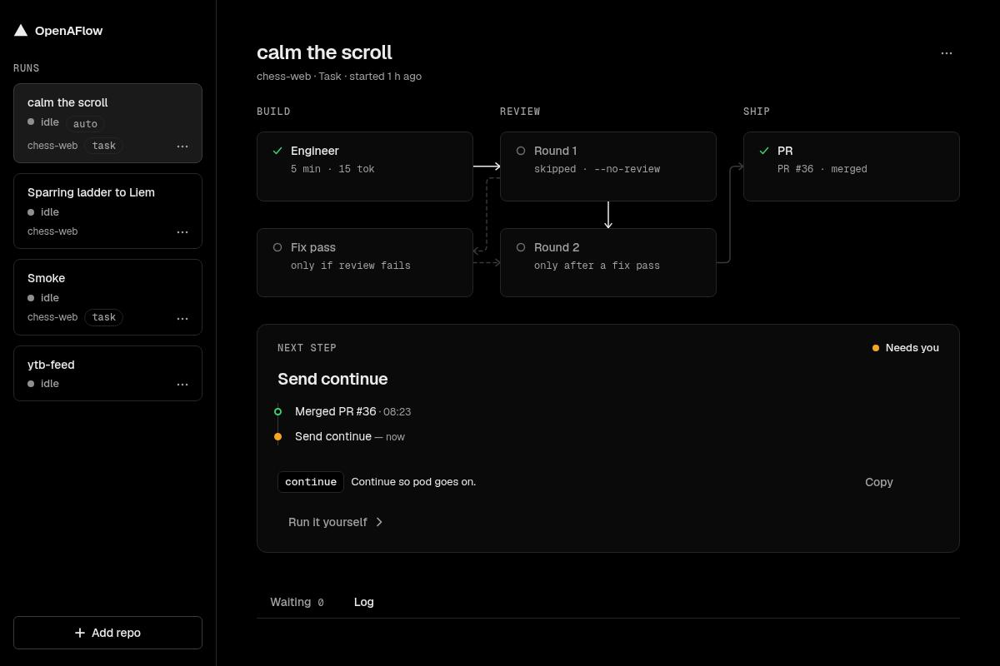
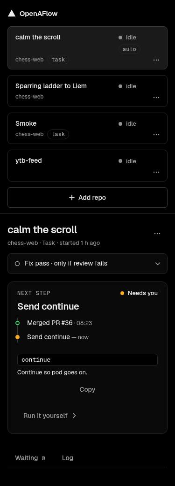
2. After Continue
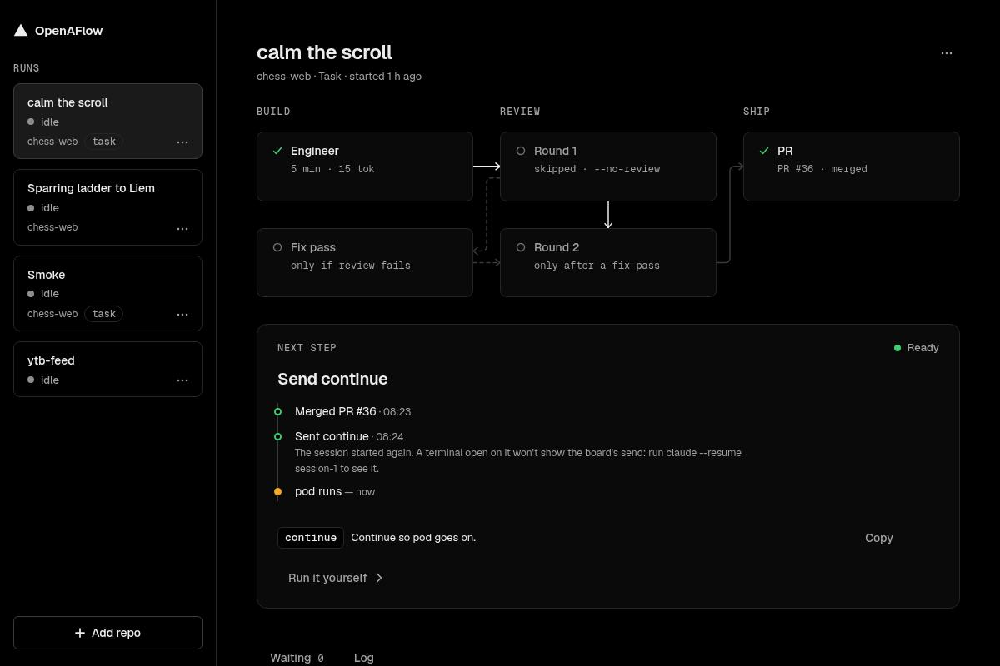
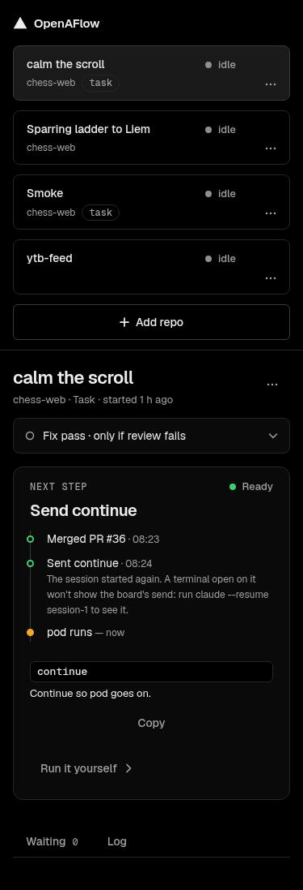
The send in flight
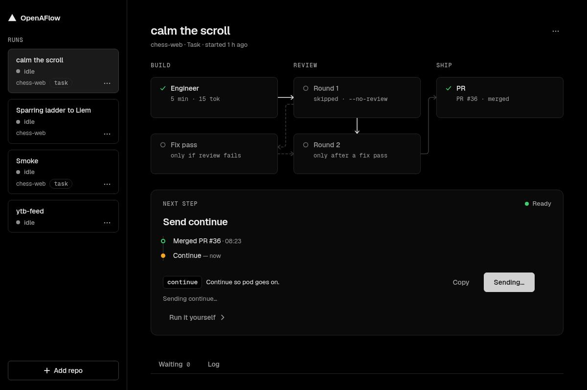
3. Forget this run
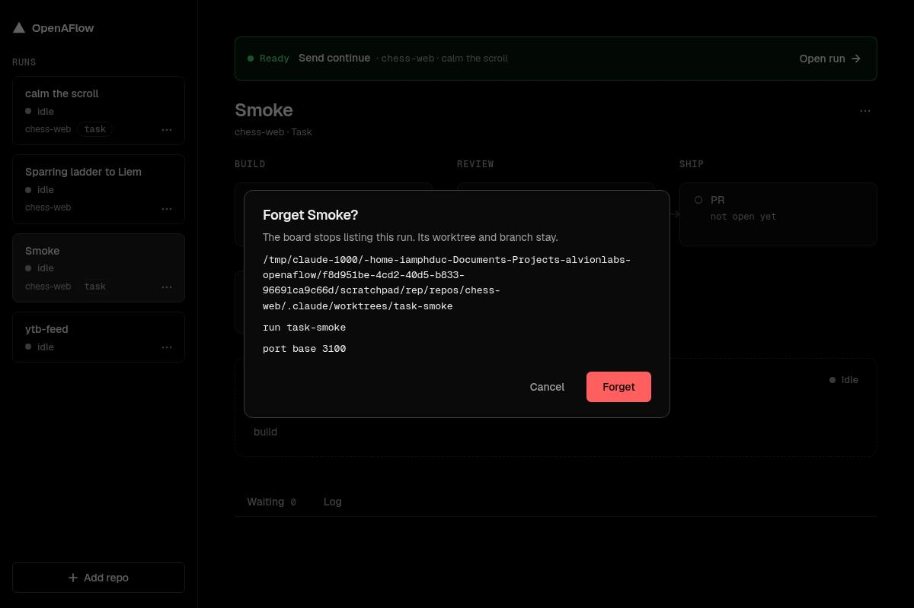
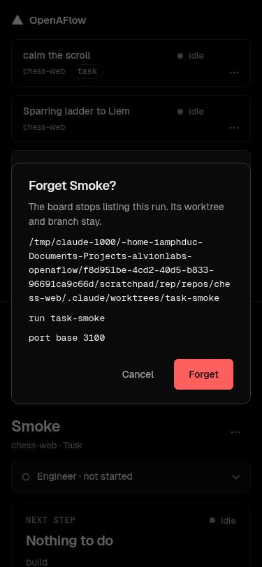
4. Remove repo
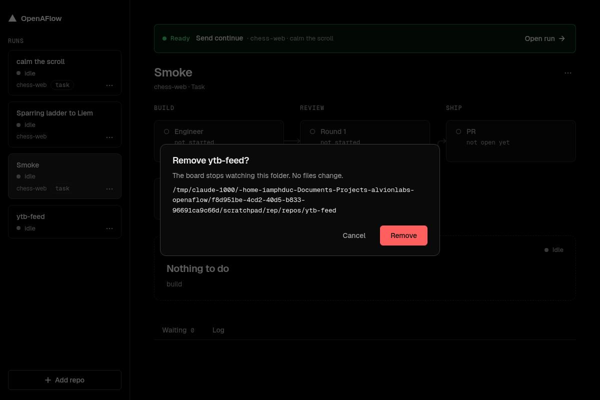
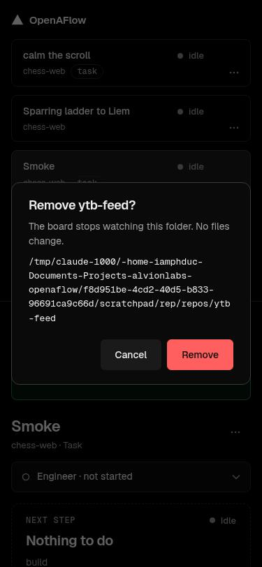
5. Add repo, browser build
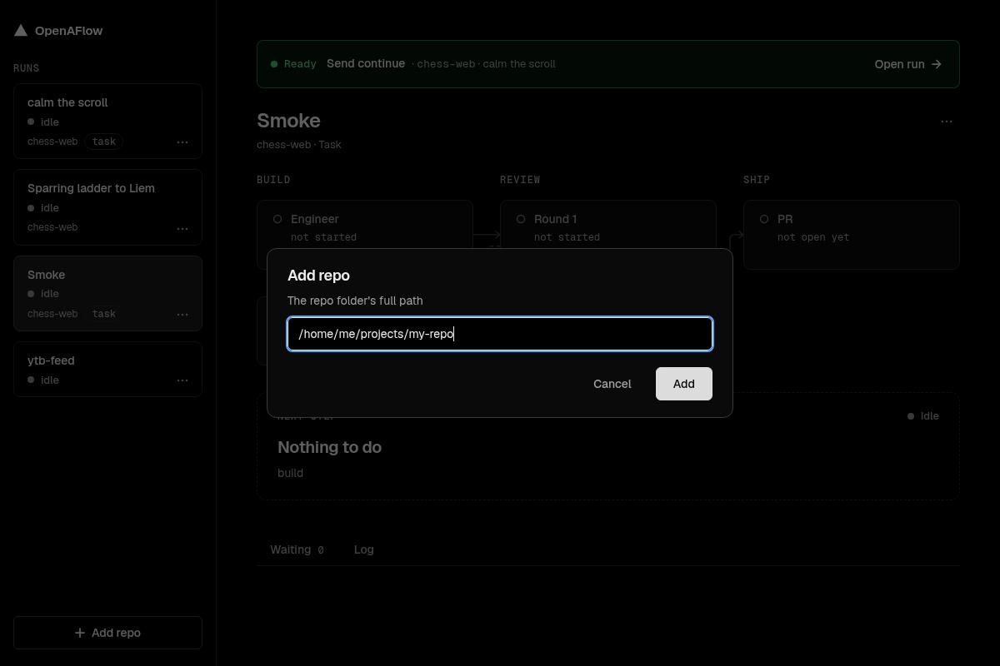
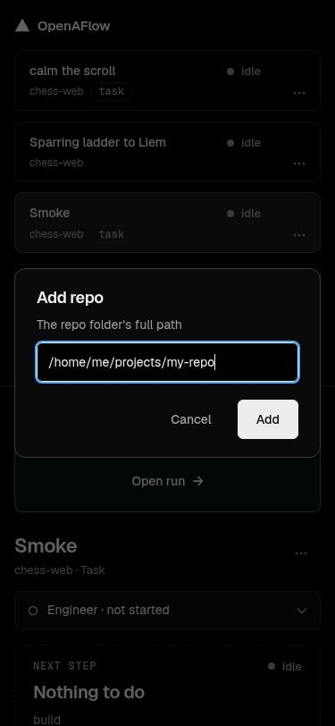
Proof
7 of 9 criteria met; Forget's tray dot and banner, and the installed-app check, were checked by nobody.
| Criterion or feature | Result | Checked by | How |
|---|---|---|---|
| Installed-app check: Add repo, Merge then Continue, Forget | not checked | nobody | No script; the reviewer drove the dialog in the dev shell and an unpacked app, and the installer step failed |
| Forget clears the tray dot and the banner | not checked | nobody | The sidebar, page move, claim file, and log line were seen; the dot and banner were not |
Merge then Continue: panel closes, PR named once, Sending…, sent line, no toast | met | engineer's tests, reviewer, this report | Reviewer saw it at 400 px; this report saw it at 1200 and 375 px, on a stub gh and fake claude |
| No-review PR shows Merge; not while the engineer runs | met | engineer's tests, reviewer, this report | Fixture tests, then the card in the browser |
| Remove repo and Forget: one modal, Escape, click outside, focus, path shown | met | engineer's tests, reviewer, this report | Both rounds in the browser; the reviewer saw 44 px buttons at 375 px; this report saw only the two modals and the path |
Newest-first order, auto tag, Add repo, /api/fs/folders 404, pnpm verify | met | engineer's tests, reviewer | Order checked by tests only; verify passed on Windows in round 1 and in CI on #110 |
Not checked by this report
- No test run: this report did not rerun
pnpm verify. Round 2 on Linux had 4 server test failures, which the reviewer called environmental. - The desktop app, the Windows dialog, the tray, and the installer: this host is Linux.
- The tests' own strength: the reviewer's mutation checks (30 in round 1) are the only evidence.
Risks and undo
Two one-way doors and one removed route; no auth, data migration, or money change.
| Risk | Undo |
|---|---|
Forget deletes a run's port claim file, which pod wrotepackages/server/src/forget-run-routes.ts | One run: write <ports dir>/<port base> again, holding the repo path, a space, and the run name. The feature: git revert -m 1 84ef406 |
The window's first bridge to the main process (a folder dialog that returns one path)packages/desktop/src/preload-main.ts | git revert c841577, then git revert -m 1 fd9d278, in that order |
Public API: POST /api/actions/forget-run added, GET /api/fs/folders removedpackages/server/src/app.ts | git revert -m 1 d905e51 (the A1 merge) to bring the route back (not rehearsed); only the app's own page used it |
Forget can free a port base a live session still holds, on a run whose PR waitspackages/model/src/forget.ts | Same as the first row: write the claim file again |
How it fits together, as built
The page reads the desktop bridge only through one file, and Forget runs web, route, then a model check.
flowchart LR RS["RunsScreen.tsx"] -- "AddRepoDialog" --> AD["AddRepoDialog.tsx"] RS -- "ConfirmModal" --> CM["ConfirmModal.tsx"] RS -- "NextStepCard" --> NC["NextStepCard.tsx"] NC -- "stop-log items" --> SL["stop-log.ts"] RS -- "forget reducer" --> FF["forget-flow.ts"] FF -- "POST forget-run" --> FR["forget-run-routes.ts"] FF -- "forgetCheck" --> FG["forget.ts"] FR -- "forgetCheck" --> FG FG -- "listRuns" --> RN["runs.ts"] AD -- "folderBridge()" --> DB["desktop-bridge.ts"] DB -. "window.openaflow at runtime" .-> PL["preload-main.ts"] PL -- "channel, answerOf" --> FB["folder-bridge.ts"] WM["window-main.ts"] -- "createFolderBridge" --> FB
Differences from the plan
- The bridge rules sit in a plain
folder-bridge.tswith fakes for tests; the plan named only a preload. The page reads the bridge only throughdesktop-bridge.ts. - Forget adds a fresh re-read of the claim file (
409 claim changed) and four refusal words inforgetCheck; the plan said only "Board check". - The Board gains
openedAtandreviewSkippedon a PR. The plan left open how a no-review PR is found; the engineer read it from the PR body. - The list gains an
Updating…state and hides the send button after a sent Continue (wave-2 fix); the plan had neither. - The
autotag sits under the status in two-column cards, not after it (agent default). - Add repo's browser path field is the shared modal, driven by
add-repo-flow.ts.
Key decisions
The human chose the shapes; agents recorded two defaults, both open to override.
| Decision | By | Why | Instead of | Consequence |
|---|---|---|---|---|
| Forget deletes only the claim file | human | Delete would be the board's first git write, and worktree removal often fails on Windows | A Delete or Clean up item | Worktree and branch stay; one-way door for the file |
| Add repo uses Electron's folder dialog | human | The parked reasons applied to a dialog opened by a server, not by Electron | The board's own folder browser | First bridge to the main process; folder route deleted |
| The merge panel closes; a list shows what happened; no toast for your own click | human | The card should name the next step at once | An in-place result and a toast | The list is card state and resets at a new stop |
| Keep Forget on a run whose PR waits on you | agent | The modal asks first, and a stuck run needs a way out | Hiding Forget while a PR waits | A live session's port base can be freed |
The auto tag sits under the status in two-column cards | agent | DESIGN.md keeps the status column for the status only | Widening the column, or the tag after the title | Differs from draft pick 4 b there |
| Find a no-review PR by its body text | agent | The Board had no other field | Guessing from the missing reviewer | Depends on pod's exact wording |
| Accept both one-way doors (Forget, the folder bridge) with wave 1 | human | CI passed and GitHub read the PR clean, so autopilot held it for a person | Merging nothing | PR #106 merged, wave 2 started |
Engineers run their own tests only; the orchestrator runs pnpm verify once per wave | human | Fewer full runs while engineers work | pnpm verify in every slice | Wave 1's first Electron run failed on a missing binary, then passed |
| Order runs by newest activity | agent | An idle run with fresh work should show above an old blocked one | State-first order | The urgent banner still raises blocked runs |
What's left
1 to do now, 0 before hosting, 1 someday.
Fix next
- Run the installed-app check by hand: Add repo, Merge then Continue, and Forget (queue entry from the reviewer).
Before hosting
- Nothing queued.
Someday
- Drop
RemoveTarget.runsand its count inremove-flow.ts; no code reads them since #110.